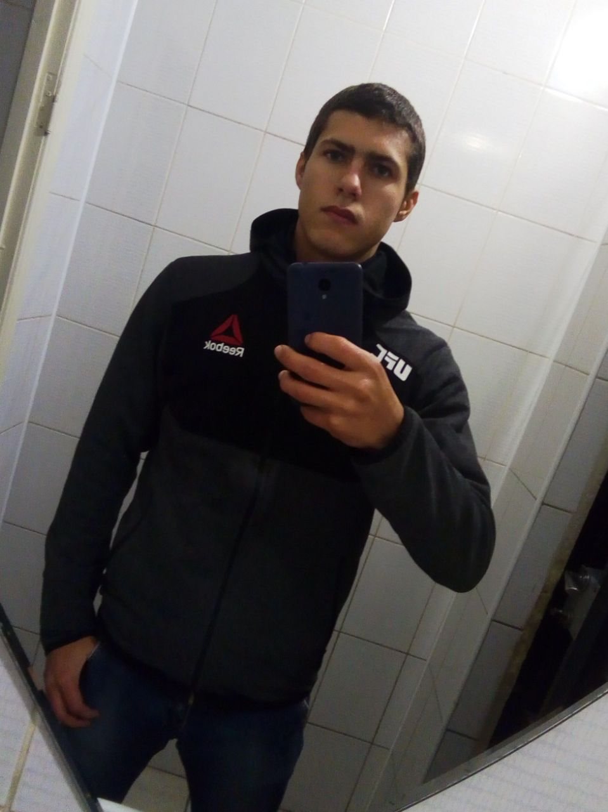
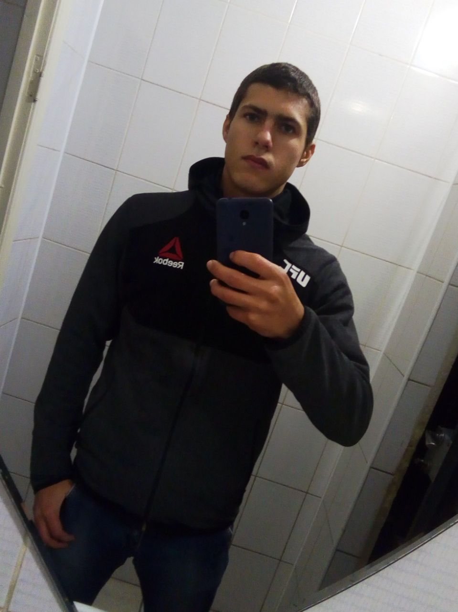

В главных ролях:
- Роберт Паттинсон
- Зои Кравиц
- Колин Фаррелл
- Питер Сарсгаард
- Пол Дано
- Энди Серкис
- Джеффри Райт
- Джон Туртурро
- Макс Карвер
- Кон О’Нилл
Предстоящий американский супергеройский фильм, основанный на одноимённых комиксах издательства DC Comics. Картина будет выпущена компанией Warner Bros. и будет перезагрузкой всех фильмов о Бэтмене.
Фильм является десятым по счёту фильмом из Расширенной вселенной DC. Режиссёром и сценаристом фильма выступит Мэтт Ривз, а главную роль исполнит Роберт Паттинсон
Разработка
В октябре 2014 года студия Warner Bros. объявила, что в разработке находится сольный фильм о Бэтмене, роль которого вновь исполнит Бен Аффлек. В июле 2015 года сообщалось, что Аффлек ведёт переговоры со студией по поводу постановки фильма и совместного написания сценария с Джеффом Джонсом.
После выхода фильма «Бэтмен против Супермена: На заре справедливости» руководитель агентства WME Патрик Уайтсел подтвердил, что Аффлек написал сценарий для сольного фильма о Бэтмене и в настоящий момент его рассматривают студия и DC. В мае 2016 года Джереми Айронс подтвердил, что он появится в фильме про Тёмного Рыцаря.
На Comic-Con в Сан-Диего в июле 2016 года было официально подтверждено, что Аффлек станет режиссёром картины. В августе 2016 года на одной из страниц Аффлека в социальных сетях был опубликован тестовый материал, в котором был показан персонаж Детстроук. 8 сентября 2016 года Джефф Джонс подтвердил, что Джо Манганьелло сыграет наёмника Слейда Уилсона, который, возможно, станет главным злодеем фильма.
Тут скоро появятся рецензии
Тут скоро появятся премьеры
| Актеры | Роль |
|---|---|
| Роберт Паттинсон | Брюс Уэйн / Бэтмен — главная роль |
| Колин Фаррелл | Освальд Кобблпот / Пингвин |
| Энди Серкис | Альфред Пенниуорт дворецкий |
| Пол Дано | Эдвард Нэштон / Загадочник |
| Джеффри Райт | Джеймс Гордон |
| Зои Кравиц | Селина Кайл / Женщина-кошка |
| Питер Сарсгаард | Гил Голсон окружный прокурор |
| Джон Туртурро | Кармайн Фальконе |
| Джейми Лоусон | Белла Реал |
| Кон О'Нилл | Маккензи Бок шеф |
| Алекс Фернс | Пит Севэдж комиссар |
| Вик Вагхорн | Шеддон |
| Альберт Джанителли | полицейский |
| Эми Клэр Билз | спецагент |
| Берн Коллако | детектив |
| Джон Вулф | убийца |
| Анджела Йео | свадебный фотограф |
| Метин Хассан | мафиози |
| Тони МакКарти | анархист |
| Фил Эйзлвуд | телохранитель |
Тут скоро появятся награды
Тут скоро появятся факты
Тут скоро появятся сайты
Подпишитесь на обновления